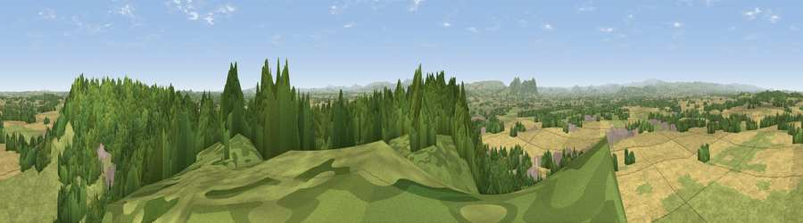

Oliver's Point
#4759 in England · top 21% of its area beats it · near NesscliffeThe view, rendered

A 360° render of this exact spot computed from the terrain model, tree cover and land cover — summer colours, afternoon light, calibrated against photographs of famous viewpoints. Real trees, hedges and buildings will differ in detail.
The panorama
Grey silhouette: terrain skyline in each direction (720 bearings, Earth curvature and refraction included). Dashed green: skyline with trees (+15 m) and buildings (+8 m) as obstacles. Blue strip: how far the ground is visible on each bearing.
Where the view opens
Wedge length = distance to the farthest visible ground on that bearing (vegetation-aware). Rings at 10, 25 and 50 km.
What fills the view
36% cropland · 31% woodland · 30% grassland · 2% built-up
Angular shares of the visible panorama (visual magnitude), not map area. Landscape diversity 0.51 (0–1 Shannon).
Key numbers
More beautiful places nearby
The staircase of upgrades: each row has a higher view potential than everything closer. Driving times are estimates from straight-line distance, calibrated against real road routing — check an actual route before setting out.
| Place | Direction | Drive | Score |
|---|---|---|---|
| Viewpoint near Melverley | SW · 9 km | ~17 min | 74.2 |
| Viewpoint near Melverley | SW · 10 km | ~19 min | 78.2 |
| Viewpoint near Halfway House | SW · 10 km | ~20 min | 83.3 |
| The Lawley | SSE · 25 km | ~40 min | 85.8 |
| Viewpoint near Little Wenlock | ESE · 27 km | ~43 min | 86.6 |
| North Hill | SSE · 83 km | ~107 min | 86.8 |
| Worcestershire Beacon | SSE · 84 km | ~108 min | 87.1 |
| Viewpoint near Cartmel | N · 160 km | ~182 min | 87.2 |
52.77249, -2.91204 · source: dobih hill · position refined by local search. Computed location — check access rights before visiting.